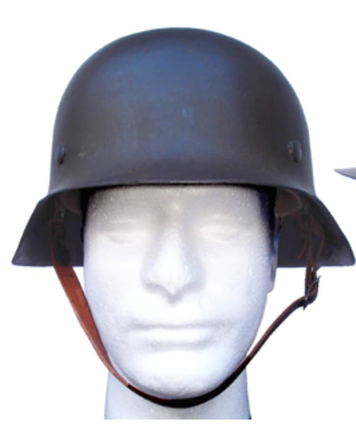
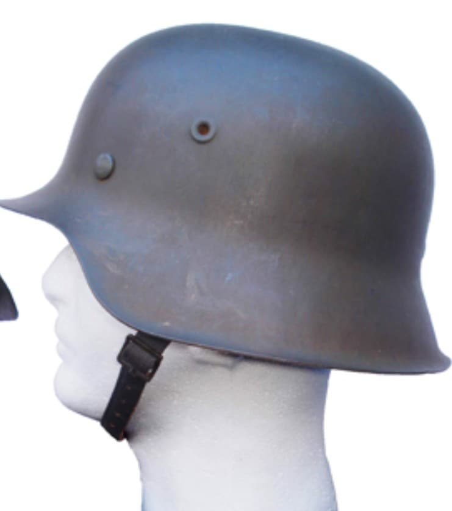
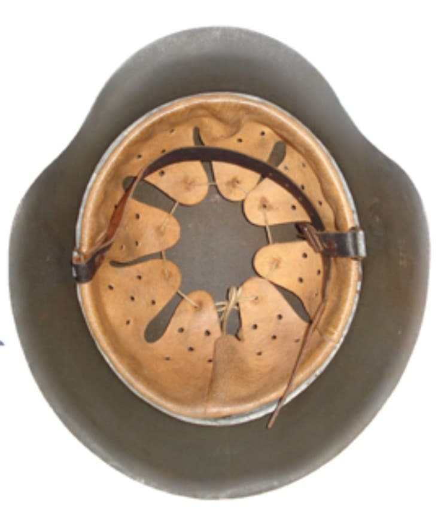

Le casque M42 est la dernière évolution des casques de la Wehrmacht durant la Seconde Guerre mondiale. Introduit en 1942, il est conçu pour être encore plus simple et rapide à produire que le M40, dans un contexte de guerre totale et de pression industrielle.
Il est porté jusqu’à la fin du conflit par les troupes du Heer, de la Luftwaffe, de la Kriegsmarine et d’autres unités.

Le M42 reprend la silhouette générale du M40, mais avec une modification majeure : le rebord n’est plus roulé. La tôle est simplement emboutie et laissée brute, ce qui permet de gagner du temps et de réduire les coûts.
Les œillets d’aération restent emboutis dans la coque, comme sur le M40. La peinture est souvent plus granuleuse et parfois appliquée de manière plus grossière en fin de guerre.
Les insignes sont de moins en moins présents, beaucoup de casques M42 étant livrés sans décalcomanies.


Le M42 est porté durant :
Il est souvent associé aux phases tardives du conflit, où la priorité est donnée à la quantité plutôt qu’à la finition.